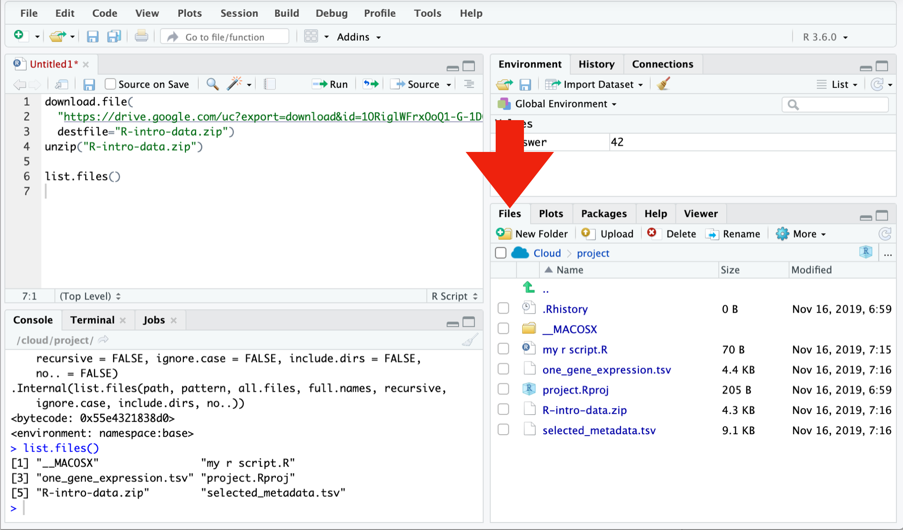

2 Data frames
Data frame is R’s name for tabular data. We generally want each row in a data frame to represent a unit of observation, and each column to contain a different type of information about the units of observation. Tabular data in this form is called “tidy data”.
Today we will be using a collection of modern packages collectively known as the Tidyverse. R and its predecessor S have a history dating back to 1976. The Tidyverse fixes some dubious design decisions baked into “base R”, including having its own slightly improved form of data frame, which is called a tibble. Sticking to the Tidyverse where possible is generally safer, Tidyverse packages are more willing to generate errors rather than ignore problems.
2.1 Setting up
Our first step is to download the files we need and to install the Tidyverse. This is the one step where we ask you to copy and paste some code:
# Download files for this workshop
download.file(
"https://drive.google.com/uc?export=download&id=1ORiglWFrxOoQ1-G-1D6-UYGUM9uePd8B",
destfile="R-intro-data.zip")
unzip("R-intro-data.zip")
# Install Tidyverse
install.packages("tidyverse")If using RStudio Cloud, you might need to switch to R version 3.5.3 to successfully install Tidyverse. Use the drop-down in the top right corner of the page.
People also sometimes have problems installing all the packages in Tidyverse on Windows machines. If you run into problems you may have more success installing individual packages.
install.packages(c("dplyr","readr","tidyr","ggplot2"))We need to load the tidyverse package in order to use it.
library(tidyverse)
# OR
library(dplyr)
library(readr)
library(tidyr)
library(ggplot2)The tidyverse package loads various other packages, setting up a modern R environment. In this section we will be using functions from the dplyr, readr and tidyr packages.
R is a language with mini-languages within it that solve specific problem domains. dplyr is such a mini-language, a set of “verbs” (functions) that work well together. dplyr, with the help of tidyr for some more complex operations, provides a way to perform most manipulations on a data frame that you might need.
2.2 Loading data
We will use the read_tsv function from readr to load a data set. (See also read.csv in base R.) TSV stands for Tab Separated Values, and is a text format used to store tabular data. The first few lines of the file we are loading are shown below. Conventionally the first line contains column headings.
th_sampleid disease age_at_dx
TH34_1150_S02 Ewing sarcoma 16
TH34_1162_S01 Ewing sarcoma 15
TH34_1163_S01 embryonal rhabdomyosarcoma 18
TH34_1179_S01 colon adenocarcinoma 24 sample_metadata <- read_tsv("selected_metadata.tsv")## Parsed with column specification:
## cols(
## sample = col_character(),
## disease = col_character(),
## age_at_dx = col_double(),
## pedaya = col_character(),
## gender = col_character(),
## site_id = col_character()
## )read_tsv has guessed the type of data each column holds:
<chr>- character strings<dbl>- numerical values. Technically these are “doubles”, which is a way of storing numbers with 15 digits precision.
We will also encounter:
<lgl>- logical values,TRUEorFALSE.<int>- integers, a fancy name for whole numbers.<fct>- factors, categorical data. We will get to this shortly.
You can also see this data frame referring to itself as “a tibble”. This is the Tidyverse’s improved form of data frame. Tibbles present themselves more conveniently than base R data frames. Base R data frames don’t show the type of each column, and output every row when you try to view them.
Tip
A data frame can also be created from vectors, with the tibble function. (See also data.frame in base R.) For example:
tibble(foo=c(10,20,30), bar=c("a","b","c"))## # A tibble: 3 x 2
## foo bar
## <dbl> <chr>
## 1 10 a
## 2 20 b
## 3 30 cThe argument names become column names in the data frame.
Tip
The path to the file on our server is "selected_metadata.tsv". This says the file "selected_metadata.tsv" is in your working directory. Sometimes a file is in a subdirectory, in which case the file and directory names are separated by /. Your working directory is shown at the top of the console pane. The path needed might be different on your own computer, depending where you downloaded the file.
One way to work out the correct path is to find the file in the file browser pane.

2.3 Exploring
The View function gives us a spreadsheet-like view of the data frame.
View(sample_metadata)print with the n argument can be used to show more than the first 10 rows on the console.
print(sample_metadata, n=200)We can extract details of the data frame with further functions:
nrow(sample_metadata)## [1] 134ncol(sample_metadata)## [1] 6colnames(sample_metadata)## [1] "sample" "disease" "age_at_dx" "pedaya" "gender" "site_id"summary(sample_metadata)## sample disease age_at_dx pedaya
## Length:134 Length:134 Min. : 0.200 Length:134
## Class :character Class :character 1st Qu.: 4.675 Class :character
## Mode :character Mode :character Median :11.615 Mode :character
## Mean :13.061
## 3rd Qu.:16.000
## Max. :76.000
## NA's :20
## gender site_id
## Length:134 Length:134
## Class :character Class :character
## Mode :character Mode :character
##
##
##
## 2.4 Indexing data frames
Data frames can be subset using [row,column] syntax.
sample_metadata[4,2]## # A tibble: 1 x 1
## disease
## <chr>
## 1 hepatoblastomaNote that while this is a single value, it is still wrapped in a data frame. (This is a behaviour specific to Tidyverse data frames.) More on this in a moment.
Columns can be given by name.
sample_metadata[4,"disease"]## # A tibble: 1 x 1
## disease
## <chr>
## 1 hepatoblastomaThe column or row may be omitted, thereby retrieving the entire row or column.
sample_metadata[4,]## # A tibble: 1 x 6
## sample disease age_at_dx pedaya gender site_id
## <chr> <chr> <dbl> <chr> <chr> <chr>
## 1 TH03_0104_S… hepatoblasto… 0.33 Yes, age < 30 ye… not repor… TH03sample_metadata[,"disease"]## # A tibble: 134 x 1
## disease
## <chr>
## 1 acute leukemia of ambiguous lineage
## 2 acute leukemia of ambiguous lineage
## 3 spindle cell/sclerosing rhabdomyosarcoma
## 4 hepatoblastoma
## 5 spindle cell/sclerosing rhabdomyosarcoma
## 6 Ewing sarcoma
## 7 hepatoblastoma
## 8 acute lymphoblastic leukemia
## 9 synovial sarcoma
## 10 synovial sarcoma
## # … with 124 more rowsMultiple rows or columns may be retrieved using a vector.
rows_wanted <- c(1,3,5)
sample_metadata[rows_wanted,]## # A tibble: 3 x 6
## sample disease age_at_dx pedaya gender site_id
## <chr> <chr> <dbl> <chr> <chr> <chr>
## 1 TH03_0010… acute leukemia of ambi… NA Yes, age <… female TH03
## 2 TH03_0103… spindle cell/sclerosin… 8 Yes, age <… not rep… <NA>
## 3 TH03_0105… spindle cell/sclerosin… 17 Yes, age <… not rep… TH03Vector indexing can also be written on a single line.
sample_metadata[c(1,3,5),]## # A tibble: 3 x 6
## sample disease age_at_dx pedaya gender site_id
## <chr> <chr> <dbl> <chr> <chr> <chr>
## 1 TH03_0010… acute leukemia of ambi… NA Yes, age <… female TH03
## 2 TH03_0103… spindle cell/sclerosin… 8 Yes, age <… not rep… <NA>
## 3 TH03_0105… spindle cell/sclerosin… 17 Yes, age <… not rep… TH03sample_metadata[1:7,]## # A tibble: 7 x 6
## sample disease age_at_dx pedaya gender site_id
## <chr> <chr> <dbl> <chr> <chr> <chr>
## 1 TH03_0010… acute leukemia of ambi… NA Yes, age <… female TH03
## 2 TH03_0010… acute leukemia of ambi… 11 Yes, age <… female TH03
## 3 TH03_0103… spindle cell/sclerosin… 8 Yes, age <… not rep… <NA>
## 4 TH03_0104… hepatoblastoma 0.33 Yes, age <… not rep… TH03
## 5 TH03_0105… spindle cell/sclerosin… 17 Yes, age <… not rep… TH03
## 6 TH03_0106… Ewing sarcoma 15 Yes, age <… not rep… TH03
## 7 TH03_0107… hepatoblastoma 1 Yes, age <… not rep… TH032.5 Columns are vectors
Ok, so how do we actually get data out of a data frame?
Under the hood, a data frame is a list of column vectors. We can use $ to retrieve columns. Occasionally it is also useful to use [[ ]] to retrieve columns, for example if the column name we want is stored in a variable.
head( sample_metadata$disease )## [1] "acute leukemia of ambiguous lineage"
## [2] "acute leukemia of ambiguous lineage"
## [3] "spindle cell/sclerosing rhabdomyosarcoma"
## [4] "hepatoblastoma"
## [5] "spindle cell/sclerosing rhabdomyosarcoma"
## [6] "Ewing sarcoma"head( sample_metadata[["disease"]] )## [1] "acute leukemia of ambiguous lineage"
## [2] "acute leukemia of ambiguous lineage"
## [3] "spindle cell/sclerosing rhabdomyosarcoma"
## [4] "hepatoblastoma"
## [5] "spindle cell/sclerosing rhabdomyosarcoma"
## [6] "Ewing sarcoma"To get the “disease” value of the 4th row as above, but unwrapped, we can use:
sample_metadata$disease[4]## [1] "hepatoblastoma"2.6 Logical indexing
A method of indexing that we haven’t discussed yet is logical indexing. Instead of specifying the row number or numbers that we want, we can give a logical vector which is TRUE for the rows we want and FALSE otherwise. This can also be used with vectors.
We will first do this in a slightly verbose way in order to understand it, then learn a more concise way to do this using the dplyr package.
is_ewing_sarcoma <- sample_metadata$disease == "Ewing sarcoma"
head(is_ewing_sarcoma)## [1] FALSE FALSE FALSE FALSE FALSE TRUEsum(is_ewing_sarcoma)## [1] 7sum treats TRUE as 1 and FALSE as 0, so it tells us the number of TRUE elements in the vector.
We can use this logical vector to get the ewing sarcoma samples from sample_metadata:
sample_metadata[is_ewing_sarcoma,]## # A tibble: 7 x 6
## sample disease age_at_dx pedaya gender site_id
## <chr> <chr> <dbl> <chr> <chr> <chr>
## 1 TH03_0106_S… Ewing sarcoma 15 Yes, age < 30 y… not report… TH03
## 2 TH34_1150_S… Ewing sarcoma 16 Yes, age < 30 y… male <NA>
## 3 TH34_1150_S… Ewing sarcoma 16 Yes, age < 30 y… male <NA>
## 4 TH34_1162_S… Ewing sarcoma 15 Yes, age < 30 y… female <NA>
## 5 TH34_1240_S… Ewing sarcoma 16 Yes, age < 30 y… male TH34
## 6 TH03_0014_S… Ewing sarcoma 4 Yes, age < 30 y… male TH03
## 7 TH03_0157_S… Ewing sarcoma 60 No not report… TH03Comparison operators available are:
x == y– “equal to”x != y– “not equal to”x < y– “less than”x > y– “greater than”x <= y– “less than or equal to”x >= y– “greater than or equal to”
More complicated conditions can be constructed using logical operators:
a & b– “and”, TRUE only if bothaandbare TRUE.a | b– “or”, TRUE if eitheraorbor both are TRUE.! a– “not” , TRUE ifais FALSE, and FALSE ifais TRUE.
The age_at_dx column of sample_metadata tells the age at which the person was diagnosed. We could see which ewing sarcomas occured in people over 65 with:
ewing_sarcoma_in_male <- is_ewing_sarcoma & sample_metadata$gender == "male"
sample_metadata[ewing_sarcoma_in_male,]## # A tibble: 4 x 6
## sample disease age_at_dx pedaya gender site_id
## <chr> <chr> <dbl> <chr> <chr> <chr>
## 1 TH34_1150_S01 Ewing sarcoma 16 Yes, age < 30 years male <NA>
## 2 TH34_1150_S02 Ewing sarcoma 16 Yes, age < 30 years male <NA>
## 3 TH34_1240_S01 Ewing sarcoma 16 Yes, age < 30 years male TH34
## 4 TH03_0014_S01 Ewing sarcoma 4 Yes, age < 30 years male TH03ewing_sarcoma_in_male seems like it should be kept within our sample_metadata data frame for future use. We can add it as a new column of the data frame with:
sample_metadata$ewing_sarcoma_in_male <- ewing_sarcoma_in_male
sample_metadata## # A tibble: 134 x 7
## sample disease age_at_dx pedaya gender site_id ewing_sarcoma_i…
## <chr> <chr> <dbl> <chr> <chr> <chr> <lgl>
## 1 TH03_0… acute leuke… NA Yes, ag… female TH03 FALSE
## 2 TH03_0… acute leuke… 11 Yes, ag… female TH03 FALSE
## 3 TH03_0… spindle cel… 8 Yes, ag… not re… <NA> FALSE
## 4 TH03_0… hepatoblast… 0.33 Yes, ag… not re… TH03 FALSE
## 5 TH03_0… spindle cel… 17 Yes, ag… not re… TH03 FALSE
## 6 TH03_0… Ewing sarco… 15 Yes, ag… not re… TH03 FALSE
## 7 TH03_0… hepatoblast… 1 Yes, ag… not re… TH03 FALSE
## 8 TH03_0… acute lymph… 0.2 Yes, ag… male TH03 FALSE
## 9 TH03_0… synovial sa… NA Yes, ag… male TH03 FALSE
## 10 TH03_0… synovial sa… 17 Yes, ag… male TH03 FALSE
## # … with 124 more rowsChallenge: logical indexing
Which samples are ewing sarcomas?
Which samples are in neither ewing sarcoma nor from males?
How many samples are from people over 65?
2.6.1 A dplyr shorthand
The above method is a little laborious. We have to keep mentioning the name of the data frame, and there is a lot of punctuation to keep track of. dplyr provides a slightly magical function called filter which lets us write more concisely. For example:
filter(sample_metadata, sample_metadata$gender == "male" & disease == "Ewing sarcoma")## # A tibble: 4 x 7
## sample disease age_at_dx pedaya gender site_id ewing_sarcoma_in…
## <chr> <chr> <dbl> <chr> <chr> <chr> <lgl>
## 1 TH34_115… Ewing sa… 16 Yes, age … male <NA> TRUE
## 2 TH34_115… Ewing sa… 16 Yes, age … male <NA> TRUE
## 3 TH34_124… Ewing sa… 16 Yes, age … male TH34 TRUE
## 4 TH03_001… Ewing sa… 4 Yes, age … male TH03 TRUEIn the second argument, we are able to refer to columns of the data frame as though they were variables. The code is beautiful, but also opaque. It’s important to understand that under the hood we are creating and combining logical vectors.
2.7 Factors
The count function from dplyr can help us understand the contents of some of the columns in sample_metadata. count is also magical, we can refer to columns of the data frame directly in the arguments to count.
count(sample_metadata, pedaya)## # A tibble: 2 x 2
## pedaya n
## <chr> <int>
## 1 No 8
## 2 Yes, age < 30 years 126count(sample_metadata, ewing_sarcoma_in_male)## # A tibble: 2 x 2
## ewing_sarcoma_in_male n
## <lgl> <int>
## 1 FALSE 130
## 2 TRUE 4Maybe you want the different categories in pedaya to be in a different order, with “Yes” coming first. This comes up quite often, for example when sorting or plotting categorical data. R’s solution is a further type of vector called a factor (think a factor of an experimental design). A factor holds categorical data, and has an associated ordered set of levels. It is otherwise quite similar to a character vector.
Any sort of vector can be converted to a factor using the factor function. This function defaults to placing the levels in alphabetical order, but takes a levels argument that can override this.
head( factor(sample_metadata$pedaya, levels=c("Yes, age < 30 years","No")) )## [1] Yes, age < 30 years Yes, age < 30 years Yes, age < 30 years
## [4] Yes, age < 30 years Yes, age < 30 years Yes, age < 30 years
## Levels: Yes, age < 30 years NoWe should modify the pedaya column of the sample_metadata table in order to use this:
sample_metadata$pedaya <- factor(sample_metadata$pedaya,
c("Yes, age < 30 years","No"))count now produces the desired order of output:
count(sample_metadata, pedaya)## # A tibble: 2 x 2
## pedaya n
## <fct> <int>
## 1 Yes, age < 30 years 126
## 2 No 8We can count two categorical columns at once.
count(sample_metadata, pedaya, ewing_sarcoma_in_male)## # A tibble: 3 x 3
## pedaya ewing_sarcoma_in_male n
## <fct> <lgl> <int>
## 1 Yes, age < 30 years FALSE 122
## 2 Yes, age < 30 years TRUE 4
## 3 No FALSE 8Challenge: counting
Investigate how many acute myeloid leukemia samples come from adult or pediatric individuals using count
2.8 Sorting
Data frames can be sorted using the arrange function in dplyr.
arrange(sample_metadata, age_at_dx)## # A tibble: 134 x 7
## sample disease age_at_dx pedaya gender site_id ewing_sarcoma_i…
## <chr> <chr> <dbl> <fct> <chr> <chr> <lgl>
## 1 TH03_00… acute lymp… 0.2 Yes, ag… male TH03 FALSE
## 2 TH03_01… hepatoblas… 0.33 Yes, ag… not re… TH03 FALSE
## 3 TARGET-… acute myel… 0.4 Yes, ag… female TARGET FALSE
## 4 TARGET-… acute myel… 0.44 Yes, ag… male TARGET FALSE
## 5 TARGET-… acute myel… 0.72 Yes, ag… male TARGET FALSE
## 6 TH34_13… juvenile m… 0.75 Yes, ag… female <NA> FALSE
## 7 TH03_01… glioma 0.9 Yes, ag… not re… TH03 FALSE
## 8 TH34_13… myoepithel… 0.96 Yes, ag… male TH34 FALSE
## 9 TH03_01… hepatoblas… 1 Yes, ag… not re… TH03 FALSE
## 10 TH38_14… sarcoma 1.33 Yes, ag… male TH38 FALSE
## # … with 124 more rowsNumeric columns are sorted in numeric order. Character columns will be sorted in alphabetical order. Factor columns are sorted in order of their levels. The desc helper function can be used to sort in descending order.
arrange(sample_metadata, desc(disease))## # A tibble: 134 x 7
## sample disease age_at_dx pedaya gender site_id ewing_sarcoma_i…
## <chr> <chr> <dbl> <fct> <chr> <chr> <lgl>
## 1 TH03_00… wilms tumor 18 Yes, ag… male TH03 FALSE
## 2 TH03_00… wilms tumor 18 Yes, ag… male TH03 FALSE
## 3 TH03_01… wilms tumor 6 Yes, ag… male TH03 FALSE
## 4 TH34_14… undifferent… 16 Yes, ag… female TH34 FALSE
## 5 TH03_01… undifferent… 9 Yes, ag… male TH03 FALSE
## 6 TH03_00… undifferent… NA Yes, ag… not r… TH03 FALSE
## 7 TH03_00… undifferent… 17 Yes, ag… not r… TH03 FALSE
## 8 TH03_00… undifferent… 17 Yes, ag… not r… TH03 FALSE
## 9 TH03_00… undifferent… 12 Yes, ag… male TH03 FALSE
## 10 TH03_00… undifferent… 12 Yes, ag… male TH03 FALSE
## # … with 124 more rows2.9 Joining data frames
Let’s move on to a larger data set. These are some gene expression values.
expression_values <- read_tsv("one_gene_expression.tsv") Quiz
What is the unit of observation in this new data frame?
It would be useful to have general information about samples from sample_metadata available as columns when we use this data frame. expression_values and sample_metadata share a column called sample which can be used to match rows from one to the other.
expression_by_disease <- left_join(expression_values, sample_metadata, by=c("sample"))
expression_by_disease## # A tibble: 134 x 9
## Gene sample expression disease age_at_dx pedaya gender site_id
## <chr> <chr> <dbl> <chr> <dbl> <fct> <chr> <chr>
## 1 ABL1 TCGA-… 4.91 acute … 61 No female <NA>
## 2 ABL1 THR24… 4.56 acute … NA Yes, … female THR24
## 3 ABL1 TARGE… 4.48 acute … NA Yes, … female TARGET
## 4 ABL1 TARGE… 3.72 acute … 4.6 Yes, … female TARGET
## 5 ABL1 TARGE… 2.94 acute … 0.72 Yes, … male TARGET
## 6 ABL1 THR24… 4.75 acute … 4.9 Yes, … female THR24
## 7 ABL1 TCGA-… 5.55 acute … 21 Yes, … female TCGA
## 8 ABL1 TCGA-… 5.25 acute … 76 No female TCGA
## 9 ABL1 TCGA-… 4.94 acute … NA No female TCGA
## 10 ABL1 TARGE… 4.14 acute … 7.82 Yes, … female TARGET
## # … with 124 more rows, and 1 more variable: ewing_sarcoma_in_male <lgl>The “left” in “left join” refers to how rows that can’t be paired up are handled. left_join keeps all rows from the first data frame but not the second. This is a good default when the intent is to attaching some extra information to a data frame. inner_join discard all rows that can’t be paired up. full_join keeps all rows from both data frames.
2.10 Further reading
We’ve covered the fundamentals of dplyr and data frames, but there is much more to learn. Notably, we haven’t covered the use of the pipe %>% to chain dplyr verbs together. The “R for Data Science” book is an excellent source to learn more.